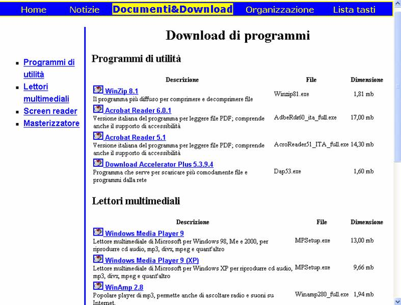

(http://www.uiciechi.it/toscana/download/programmi.htm)

Documenti&Download::Download di programmi Graphic Barra di navigazione: Link salta al contenuto alt+0 Link Home alt+h Link Notizie alt+n Documenti&Download alt+t Link Organizzazione alt+o Link Lista tasti alt+l Graphic Sotto menu: List of 4 items o Link Programmi di utilità o Link Lettori multimediali o Link Screen reader o Link Masterizzatore list end Heading level 1 Download di programmi ...